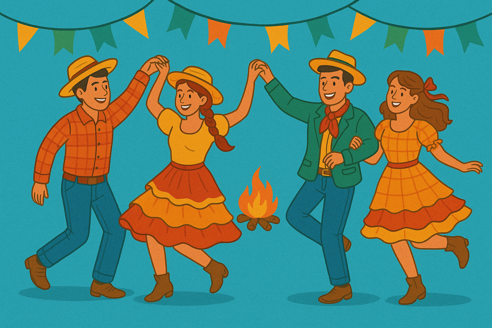
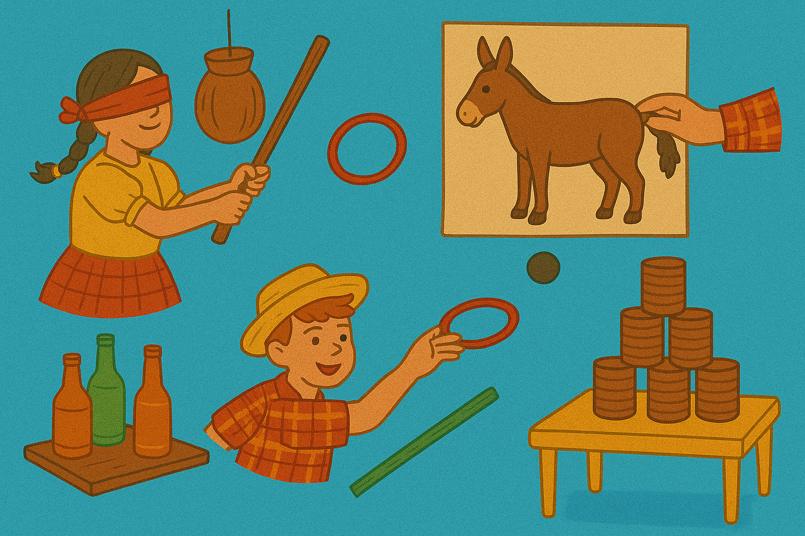
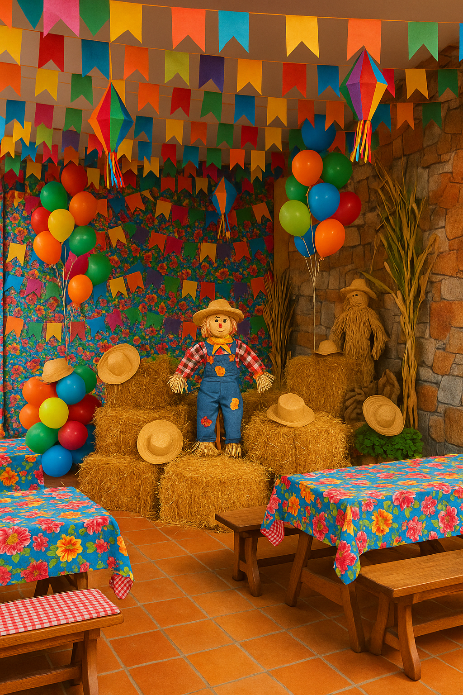

Uma celebração de tradições, sabores e culturas!
A origem da Festa Junina é apontada pelos historiadores como relacionada a festividades pagãs realizadas na Europa no solstício de verão. Posteriormente cristianizadas, passaram a fazer parte do calendário católico. No Brasil, essas festas foram trazidas pelos portugueses e, com o tempo, ganharam forte caráter popular. Atualmente, são comemoradas em todas as regiões do país, reunindo aspectos religiosos, culturais e sociais.
Essa comemoração é um momento de lazer, reunindo amigos e familiares em um ambiente alegre, com brincadeiras, danças e comidas típicas. Ela se tornou um símbolo da identidade cultural brasileira, misturando elementos do campo com a vida urbana.
Nas zonas urbanas, as festas juninas ajudam a aproximar as pessoas das tradições do interior. Através de elementos como comidas típicas, danças como a tradicional quadrilha, o som característico da sanfona, as roupas caipiras e o clima acolhedor de comunidade, essa celebração se torna uma verdadeira ponte cultural entre o campo e a cidade. Mesmo em grandes centros urbanos, o espírito junino resgata as raízes rurais do Brasil, valorizando saberes populares, costumes antigos e a alegria simples da vida no campo.
A gastronomia da festa junina é uma das maiores expressões culturais dessa celebração tão popular no Brasil. Baseada principalmente em ingredientes típicos do campo, como milho, amendoim, mandioca e coco, ela oferece uma variedade de pratos doces e salgados que encantam o paladar de todas as idades. Esses alimentos refletem as raízes rurais da festa e reforçam a conexão entre campo e cidade, mantendo vivas as tradições que atravessam gerações.

Há brincadeiras tradicionais como a pescaria, o jogo de argolas, o correio elegante, a cadeia e a corrida do saco — e claro, a fogueira. Todas essas atividades reforçam o clima festivo e promovem a interação entre crianças e adultos. Essas tradições ajudam a manter viva a cultura popular, trazendo para a cidade os costumes e valores do campo, como a cooperação, a simplicidade e a alegria de celebrar juntos.
A decoração da festa junina é marcada por cores vibrantes, estampas alegres e elementos que remetem à vida no campo. Bandeirinhas coloridas feitas de papel, balões decorativos, chapéus de palha e tecidos xadrez criam um ambiente acolhedor e festivo. As mesas costumam ser enfeitadas com toalhas floridas ou de chita, e muitas vezes há feno, espantalhos, barracas de madeira e luzes de arraial para completar o cenário. Essa decoração típica transforma qualquer espaço urbano em uma verdadeira roça festiva.
